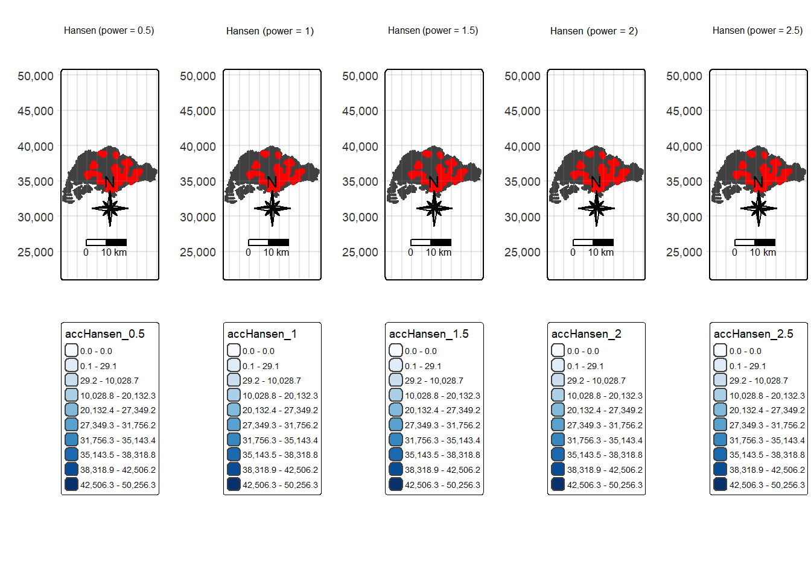

pacman::p_load(tmap, SpatialAcc, sf,
ggstatsplot, reshape2,
tidyverse)Hands-on Exercise 9A: Geographically Weighted Predictive Models
1 Objective
In this hands-on exercise, we will gain hands-on experience on how to model geographical accessibility by using R’s geospatial analysis packages.
2 The Data
Four data sets will be used in this hands-on exercise, they are:
MP14_SUBZONE_NO_SEA_PL: URA Master Plan 2014 subzone boundary GIS data. This data set is downloaded from data.gov.sg.
hexagons: A 250m radius hexagons GIS data. This data set was created by using st_make_grid() of sf package. It is in ESRI shapefile format.
ELDERCARE: GIS data showing location of eldercare service. This data is downloaded from data.gov.sg. There are two versions. One in ESRI shapefile format. The other one in Google kml file format. For the purpose of this hands-on exercise, ESRI shapefile format is provided.
OD_Matrix: a distance matrix in csv format. There are six fields in the data file. They are:
- origin_id: the unique id values of the origin (i.e. fid of hexagon data set)
- destination_id: the unique id values of the destination (i.e. fid of ELDERCARE data set)
- entry_cost: the perpendicular distance between the origins and the nearest road
- network_cost: the actual network distance from the origin and destination
- exit_cost: the perpendicular distance between the destination and the nearest road
- total_cost: the summation of entry_cost, network_cost and exit_cost
3 Getting Started
Before we getting started, it is important for us to install the necessary R packages and launch them into RStudio environment. The code chunk below installs and launches these R packages into RStudio environment.
4 Geospatial Data Wrangling
4.1 Importing geospatial data
Three geospatial data will be imported from the data/geospatial sub-folder. They are MP14_SUBZONE_NO_SEA_PL, hexagons and ELDERCARE.
The code chunk below is used to import these three data sets shapefile by using st_read() of sf packages.
mpsz <- st_read(dsn = "data/geospatial", layer = "MP14_SUBZONE_NO_SEA_PL")Reading layer `MP14_SUBZONE_NO_SEA_PL' from data source
`D:\ssinha8752\ISSS608-VAA\In-class_Ex\In-class_Ex09\data\geospatial'
using driver `ESRI Shapefile'
Simple feature collection with 323 features and 15 fields
Geometry type: MULTIPOLYGON
Dimension: XY
Bounding box: xmin: 2667.538 ymin: 15748.72 xmax: 56396.44 ymax: 50256.33
Projected CRS: SVY21hexagons <- st_read(dsn = "data/geospatial", layer = "hexagons") Reading layer `hexagons' from data source
`D:\ssinha8752\ISSS608-VAA\In-class_Ex\In-class_Ex09\data\geospatial'
using driver `ESRI Shapefile'
Simple feature collection with 3125 features and 6 fields
Geometry type: POLYGON
Dimension: XY
Bounding box: xmin: 2667.538 ymin: 21506.33 xmax: 50010.26 ymax: 50256.33
Projected CRS: SVY21 / Singapore TMeldercare <- st_read(dsn = "data/geospatial", layer = "ELDERCARE") Reading layer `ELDERCARE' from data source
`D:\ssinha8752\ISSS608-VAA\In-class_Ex\In-class_Ex09\data\geospatial'
using driver `ESRI Shapefile'
Simple feature collection with 120 features and 19 fields
Geometry type: POINT
Dimension: XY
Bounding box: xmin: 14481.92 ymin: 28218.43 xmax: 41665.14 ymax: 46804.9
Projected CRS: SVY21 / Singapore TMThe report above shows that the R object used to contain the imported MP14_SUBZONE_WEB_PL shapefile is called mpsz and it is a simple feature object. The geometry type is multipolygon. it is also important to note that mpsz simple feature object does not have EPSG information.
4.2 Updating CRS information
The code chunk below updates the newly imported mpsz with the correct ESPG code (i.e. 3414)
mpsz <- st_transform(mpsz, 3414)
eldercare <- st_transform(eldercare, 3414)
hexagons <- st_transform(hexagons, 3414)The code chunk below will be used to verify the newly transformed mpsz_svy21.
st_crs(mpsz)Coordinate Reference System:
User input: EPSG:3414
wkt:
PROJCRS["SVY21 / Singapore TM",
BASEGEOGCRS["SVY21",
DATUM["SVY21",
ELLIPSOID["WGS 84",6378137,298.257223563,
LENGTHUNIT["metre",1]]],
PRIMEM["Greenwich",0,
ANGLEUNIT["degree",0.0174532925199433]],
ID["EPSG",4757]],
CONVERSION["Singapore Transverse Mercator",
METHOD["Transverse Mercator",
ID["EPSG",9807]],
PARAMETER["Latitude of natural origin",1.36666666666667,
ANGLEUNIT["degree",0.0174532925199433],
ID["EPSG",8801]],
PARAMETER["Longitude of natural origin",103.833333333333,
ANGLEUNIT["degree",0.0174532925199433],
ID["EPSG",8802]],
PARAMETER["Scale factor at natural origin",1,
SCALEUNIT["unity",1],
ID["EPSG",8805]],
PARAMETER["False easting",28001.642,
LENGTHUNIT["metre",1],
ID["EPSG",8806]],
PARAMETER["False northing",38744.572,
LENGTHUNIT["metre",1],
ID["EPSG",8807]]],
CS[Cartesian,2],
AXIS["northing (N)",north,
ORDER[1],
LENGTHUNIT["metre",1]],
AXIS["easting (E)",east,
ORDER[2],
LENGTHUNIT["metre",1]],
USAGE[
SCOPE["Cadastre, engineering survey, topographic mapping."],
AREA["Singapore - onshore and offshore."],
BBOX[1.13,103.59,1.47,104.07]],
ID["EPSG",3414]]4.3 Cleaning and updating attribute fields of the geospatial data
There are many redundant fields in the data tables of both eldercare and hexagons. The code chunks below will be used to exclude those redundant fields. At the same time, a new field called demand and a new field called capacity will be added into the data table of hexagons and eldercare sf data frame respectively. Both fields are derive using mutate() of dplyr package.
eldercare <- eldercare %>%
select(fid, ADDRESSPOS) %>%
mutate(capacity = 100)hexagons <- hexagons %>%
select(fid) %>%
mutate(demand = 100)Notice that for the purpose of this hands-on exercise, a constant value of 100 is used. In practice, actual demand of the hexagon and capacity of the eldercare centre should be used.
5 Apsaital Data Handling and Wrangling
5.1 Importing Distance Matrix
The code chunk below uses read_cvs() of readr package to import OD_Matrix.csv into RStudio. The imported object is a tibble data.frame called ODMatrix.
ODMatrix <- read_csv("data/aspatial/OD_Matrix.csv", skip = 0)Rows: 375000 Columns: 6
── Column specification ────────────────────────────────────────────────────────
Delimiter: ","
dbl (6): origin_id, destination_id, entry_cost, network_cost, exit_cost, tot...
ℹ Use `spec()` to retrieve the full column specification for this data.
ℹ Specify the column types or set `show_col_types = FALSE` to quiet this message.The code chunk below uses spread() of tidyr package is used to transform the O-D matrix from a thin format into a fat format.
distmat <- ODMatrix %>%
select(origin_id, destination_id, total_cost) %>%
spread(destination_id, total_cost)%>%
select(c(-c('origin_id')))Currently, the distance is measured in metre because SVY21 projected coordinate system is used. The code chunk below will be used to convert the unit f measurement from metre to kilometre.
distmat_km <- as.matrix(distmat/1000)6 Modelling and Visualising Accessibility using Hansen Method
6.1 Computing Hansen’s accessibility
# --- 0) Load required packages ---
pacman::p_load(sf, tmap, dplyr, purrr, SpatialAcc, knitr)# --- 0) Load packages ---
pacman::p_load(sf, tmap, dplyr, purrr, SpatialAcc)
tmap_mode("plot") # Ensure tmap renders static mapsℹ tmap modes "plot" - "view"
ℹ toggle with `tmap::ttm()`# --- 1) Import geospatial datasets ---
mpsz <- st_read(dsn = "data/geospatial", layer = "MP14_SUBZONE_NO_SEA_PL")Reading layer `MP14_SUBZONE_NO_SEA_PL' from data source
`D:\ssinha8752\ISSS608-VAA\In-class_Ex\In-class_Ex09\data\geospatial'
using driver `ESRI Shapefile'
Simple feature collection with 323 features and 15 fields
Geometry type: MULTIPOLYGON
Dimension: XY
Bounding box: xmin: 2667.538 ymin: 15748.72 xmax: 56396.44 ymax: 50256.33
Projected CRS: SVY21hexagons <- st_read(dsn = "data/geospatial", layer = "hexagons")Reading layer `hexagons' from data source
`D:\ssinha8752\ISSS608-VAA\In-class_Ex\In-class_Ex09\data\geospatial'
using driver `ESRI Shapefile'
Simple feature collection with 3125 features and 6 fields
Geometry type: POLYGON
Dimension: XY
Bounding box: xmin: 2667.538 ymin: 21506.33 xmax: 50010.26 ymax: 50256.33
Projected CRS: SVY21 / Singapore TMeldercare <- st_read(dsn = "data/geospatial", layer = "ELDERCARE")Reading layer `ELDERCARE' from data source
`D:\ssinha8752\ISSS608-VAA\In-class_Ex\In-class_Ex09\data\geospatial'
using driver `ESRI Shapefile'
Simple feature collection with 120 features and 19 fields
Geometry type: POINT
Dimension: XY
Bounding box: xmin: 14481.92 ymin: 28218.43 xmax: 41665.14 ymax: 46804.9
Projected CRS: SVY21 / Singapore TM# --- 2) Transform CRS to EPSG:3414 (SVY21) ---
mpsz <- st_transform(mpsz, 3414)
hexagons <- st_transform(hexagons, 3414)
eldercare <- st_transform(eldercare, 3414)
# --- 3) Add demand and capacity columns ---
hexagons <- hexagons %>%
select(fid) %>%
mutate(demand = 100)
eldercare <- eldercare %>%
select(fid, ADDRESSPOS) %>%
mutate(capacity = 100)
# --- 4) Import OD Matrix (aspatial) and convert to distance matrix in km ---
ODMatrix <- readr::read_csv("data/aspatial/OD_Matrix.csv")Rows: 375000 Columns: 6
── Column specification ────────────────────────────────────────────────────────
Delimiter: ","
dbl (6): origin_id, destination_id, entry_cost, network_cost, exit_cost, tot...
ℹ Use `spec()` to retrieve the full column specification for this data.
ℹ Specify the column types or set `show_col_types = FALSE` to quiet this message.distmat_wide <- ODMatrix %>%
select(origin_id, destination_id, total_cost) %>%
arrange(origin_id, destination_id) %>%
tidyr::pivot_wider(
names_from = destination_id,
values_from = total_cost,
names_sort = TRUE
)
distmat_mat <- distmat_wide %>%
tibble::column_to_rownames("origin_id") %>%
as.matrix()
distmat_km <- distmat_mat / 1000 # Convert from metres to km
# --- 5) Compute Hansen accessibility for 5 power values ---
powers <- c(0.5, 1, 1.5, 2, 2.5)
acc_list <- lapply(powers, function(p) {
out <- data.frame(SpatialAcc::ac(
hexagons$demand,
eldercare$capacity,
distmat_km,
power = p,
family = "Hansen"
))
colnames(out) <- paste0("accHansen_", p)
out
})
hex_all <- dplyr::bind_cols(hexagons, acc_list)
# 공통 구간(권장)
vars <- paste0("accHansen_", powers)
breaks_all <- quantile(unlist(hex_all[, vars]),
probs = seq(0, 1, length.out = 11),
na.rm = TRUE)
make_map <- function(var, title) {
tm_shape(hex_all, bbox = sf::st_bbox(hex_all)) +
tm_polygons(fill = var,
fill.scale = tm_scale_intervals(style="fixed", breaks=breaks_all, values="brewer.blues")) +
tm_shape(eldercare) + tm_dots(size=0.3, fill="red", col="black") +
tm_title(title) + tm_layout(frame=TRUE) + tm_compass(type="8star", size=2) +
tm_scalebar() + tm_grid(alpha=0.2)
}
maps <- mapply(make_map, vars, paste0("Hansen (power = ", powers, ")"), SIMPLIFY=FALSE)
tmap_arrange(plotlist = maps, ncol = 5)[plot mode] fit legend/component: Some legend items or map compoments do not
fit well, and are therefore rescaled.
ℹ Set the tmap option `component.autoscale = FALSE` to disable rescaling.
[plot mode] fit legend/component: Some legend items or map compoments do not
fit well, and are therefore rescaled.
ℹ Set the tmap option `component.autoscale = FALSE` to disable rescaling.
[plot mode] fit legend/component: Some legend items or map compoments do not
fit well, and are therefore rescaled.
ℹ Set the tmap option `component.autoscale = FALSE` to disable rescaling.
[plot mode] fit legend/component: Some legend items or map compoments do not
fit well, and are therefore rescaled.
ℹ Set the tmap option `component.autoscale = FALSE` to disable rescaling.
[plot mode] fit legend/component: Some legend items or map compoments do not
fit well, and are therefore rescaled.
ℹ Set the tmap option `component.autoscale = FALSE` to disable rescaling.